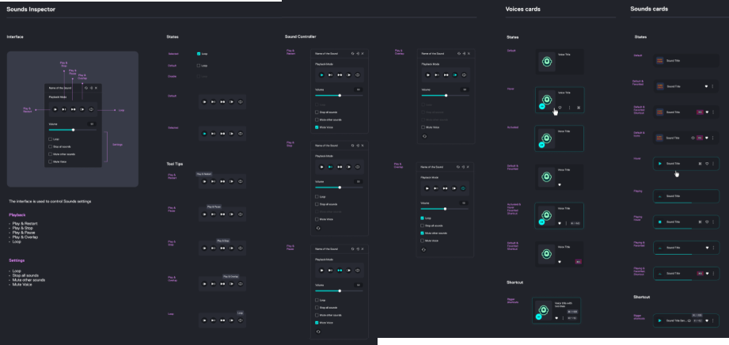

My revamped onboarding flow, cut dropouts by 80%
Voicemod is a voice changing app for in-game use or with Discord, Google Meet or Zoom.
Approximately 25% of our new users uninstalled the app within the first 24 hours.
Voicemod is a voice changing app for in-game use or with Discord, Google Meet or Zoom.
Approximately 25% of our new users uninstalled the app within the first 24 hours.
Role
Senior staff product designer (full-time)
Employer
Voicemod, Valencia (remote)
Year
2022 2023
Tools
Figma, Miro, Typeform, Lookback, Calendly & RewardGenius
Skills
Voicemod is a real-time voice changing app for use with meeting apps such as Discord, Google Meet, Zoom but not just! Our users typically use it within games when they're streaming or just playing with friends.
I am one of the main designers for the MacOS version.
Video streaming apps
Jazz up your live streams
Meeting apps
Add some humor to your meetings
Metaverse apps
Anonymize your virtual presence in the Metaverse
Have fun while gaming
Transform your gaming experience
Role-play
Immerse yourself in character and interact
Create content
Captivate your audience with voice effects
Give it a go 
Play and toggle
Sound Information
Playing Information
Try different voices
Our "uninstall survey" (a survey that pops up when the user uninstalls the app) revealed a high dropout rate. New users were experiencing problems due to difficulty in setting up the app correctly.
25% of new users uninstalled within 24 hours due to lack of experience in using audio software; they couldn't set-up their gear properly, didn't know what was wrong and how to connect to a third party app.
Downloaded
Installed
24.6% faced issues
Uninstalled
Within 24 hours
What was the number one thing that motivated you to uninstall Voicemod?
134.7k out of 134.7k people answered this question
Voicemod didn't work
What exactly didn't work?
19.3k out of 134.7k people answered this question
I couldn't open Voicemod
I couldn't connect Voicemod with Discord etc
To address this issue I proposed an onboarding process that would guide new users through the setup process and allow them to reach the "wow" moment of the app right from the start.
I presented my recommendations to the stakeholders and with minor changes, we decided to move forward to user validation using this Figma prototype.
"How can we provide effective guidance to our users, enabling them to quickly setup the app and experience the 'wow moment' within 5 minutes?"
Before anything, I conducted a competitive analysis to analyze strengths and weaknesses from key competitors.
The best and closest match to our case was Krisp.ai - a tool that allows users the stifle background noise to zero.
During the onboarding process Krisp.ai requires users to record their voice...
...and then test it to see the difference themselves. That's the "wow moment"!

Make sure users connect to third party apps right off the bat!
Asking users to train their voice to clone it from the start would be time consuming...

Introducing a soundboard during onboarding, would be nice but unnecessary...
Once done with the competitive analysis, I drafted a persona for me and the team to get acquainted with and feel empathetic towards.
The target audience consists mostly of Gen Z males as evidenced by surveys and user interviews.
Generation z males
Motives
Values
Pain points
Goals
Having conducted thorough explorations, I identified three potential user journeys.
I carefully evaluated each journey and selected the one that best met the needs of both users and the business.
User opens VM
Select use case
Pick your microphone & headphones
OS dialog for mic permission
Voice recording
User tries out various voices (wow moment)
Selects 3rd party app
Gets instructions
Complete
Moment of celebration!
Survey results showed a high dropout rate, prompting a need for drastic action. We converted our key problems into opportunities to solve for in the new onboarding experience.
Audio setup3
Wow moment3
Third party integration4
Some of the early sketches that lead to the final result.
When done with the wireframes and mockups, I created this Figma prototype taking into consideration feedback from the stakeholders (including developers).
By incorporating their perspectives, I refined the design and started preparing for the user testing process.
The Figma prototype for the user testing
My desk while working on the prototype
I think it looks quite nice
Research fan? Take a look at the process
To validate the new flow, the user research plan I prepared included the following key steps:
To ensure a successful user interview with everyone involved, I required the presence of two colleagues playing key roles:
Since I was the facilitator who conducted the interview with the user, I sought assistance from my partners in crime.
Of course I could have conducted the interviews alone and check later the recordings, but two heads are better than one...
My user research tools include Typeform to recruit participants & accepting GDPR terms, Calendly to schedule the interview slots and Lookback to conduct and record the interviews.
During the user testing sessions, we explained our objectives and had participants complete the dummy onboarding with the prototype while asking open-ended questions to collect their thoughts and feedback.
While they interacted with the app, we observed their behavior, noted issues, confusions and paid attention to both verbal and nonverbal cues.
A short recording from Lookback.
When done with the testing sessions, we reviewed our notes and compiled a list of issues and opportunities for improvement.
We then analyzed this feedback to determine which changes were most important to address and incorporated them into our design.
Our Miro board looks a bit messy right after taking the notes. We groom it later.
The new onboarding experience not only drew upon the existing design system but also incorporated additional elements (atoms and molecules), further advancing and expanding the ecosystem.
By providing clear guidance and instructions, users gained a better understanding of how to navigate and utilize the app effectively. As a result, the dropout rate dramatically decreased from 24.6% to an astounding 5%.
The implementation of the new onboarding flow brought tremendous success to the app, significantly reducing user uninstalls.
Dropout rate
5% -79.27%
Dropouts with old version
Dropouts with new version
Problems during integration to Discord etc
2% -90.57%
Problems with old version
Problems with new version
Despite the increase in the number of clicks during the onboarding process, we observed a significant decrease in the dropout rate.
The main takeaways from this experience are:
Next steps:
Thank you for reading! 
ps. This was only one example of my work @Voicemod. Another major project I am involved with is the design of a completely new voice creating app.
AI-driven tech changing peoples' voices
"Jaime Bosch, the CEO of Voicemod, tells Julia Chatterley his technology gives users greater expression." —CNN
View videoVoicemod is now available on Mac with real-time AI voice changing and soundboards
"Voicemod lets you transform your voice into fantasy characters or use a soundboard in games or Discord calls." —The Verge
Read articleOn this page
Senior UX designer (full-time) 2021 2022
Ennely app was a B2C MacOS video editor assistant that enabled content creators to create a first cut within minutes.
Find out how a unique app with no pre-established rules came to life and how along with a small team I created magic.
Lightning fast 1st cuts
Footage duration
869m.
Requirements
@Channel